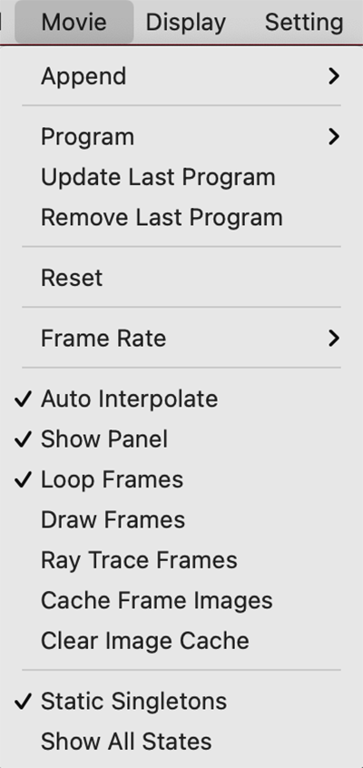
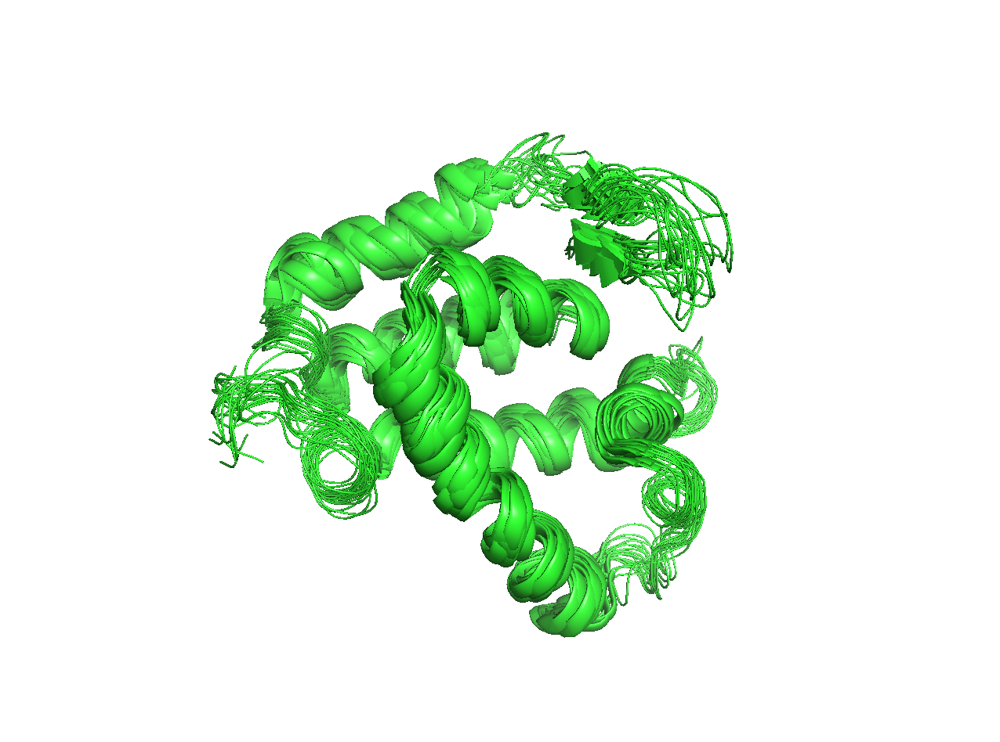

Movie
PyMOLのMovie機能を使うことでカメラまたは分子自体の動き・表示に時限式のプログラムを施し、分子を様々な角度から映すことができるようになります。
Append
この機能は指定した秒数分のフレームを確保するのに使います。メニュー上では0.25〜60 secondの延長が可能です。このとき、設定されているFPSの値（後述）に応じて延長されるフレーム数が増加します。つまり、30FPSに設定されているときに2 second延長しようとすると、60フレーム分追加されることになります。
コマンドでは、60フレーム分の枠を確保する場合にはmset 1x60のような形で入力します。この60フレームは30FPSに設定しているときですと2秒に相当します。
Program
ムービーに登録する動きのプログラミングを行います。視点を変更する（つまり分子自体の座標は変化しない）Camera Loop, 登録しておいたScene（Sceneのページを参照）の入れ替えを制御するScene Loop, 表示された分子オブジェクトにstateがある状態（NMR構造やMDシミュレーションの動きのデータが入ったオブジェクトなど）での動きの再生を行うState Loop, Stateをすべて再生した後に逆再生を行うState Sweepが用意されています。
Program機能を使うと、PyMOLの画面下にFrameのインジケータが出現します。これをムービーパネルと呼びます。ここには現在どのフレームにいるか、そのフレームにカメラが設定されているかどうかを示す小さなアイコンが表示されます。
以下に示す動きのプログラムは複数連結させることも可能で、Camera Loop Nutate の後に State Loopを行い、Camera Loop X-Rockを行う……という設定にすることも可能です。
Camera Loop
カメラ視点を制御するメニューです。中にはNutate, X-Rock, X-Roll, Y-Rock, Y-Rollのメニューがあります。それぞれどういった動きをするものなのかを以下で紹介していきます。
Nutate
Nutateは章動のことで、物体の回転運動において、歳差運動をする回転軸の動きの短周期で微小な成分を指します。以下の動画のようなカメラの動きを行います。
GUIメニューからは動きの秒数と歳差運動の角度をいくつか選ぶことができます。
コマンドではmovie.add_nutate(4,15,start=1)となっています（4秒間、角度15度設定の場合）。start=の値にはこのプログラムを付け加えるFrameの開始番号を入力します。
X-Rock, Y-Rock
X-Rock, Y-Rockは画面\(x\)軸または\(y\)軸に対してカメラ角度を指定した値の範囲分だけ傾ける運動を繰り返します。以下の動画のようなカメラの動きを行います。
コマンドではmovie.add_rock(2,30,axis='x',start=1)となっています（2秒間、角度30度、\(x\)軸rock設定の場合）。start=の値にはこのプログラムを付け加えるFrameの開始番号を入力します。
X-Roll, Y-Roll
X-Roll, Y-Rollは画面\(x\)軸または\(y\)軸に、指定された時間で1周して戻ってくるように回転させます。以下の動画のようなカメラの動きを行います。
コマンドではmovie.add_roll(4.0,axis='x',start=1)となっています（4秒間、\(x\)軸回転設定の場合）。start=の値にはこのプログラムを付け加えるFrameの開始番号を入力します。
Scene Loop
この機能を使うためには、Scene機能によっていくつかのSceneを事前に用意しておく必要があります。このScene間でカメラの動きをシームレスにつなげてムービーパネルに登録してくれます。
下の動画の例では先にF1, F2, F3の3つのSceneが登録された状態で示しています。
nutate
登録されているSceneを順番に移動しながら、各Sceneについて指定した秒数分のnutateを行っていきます。
コマンドではset sweep_angle 30; cmd.movie.add_scenes(None, 2, rock=4, start=1)となっています（角度30度、2秒間動作、nutate設定の場合）。start=の値にはこのプログラムを付け加えるFrameの開始番号を入力します。
X-Rock, Y-Rock
登録されているSceneを順番に移動しながら、各Sceneについて指定した秒数分のX-Rock/Y-Rockを行っていきます。
コマンドではset sweep_angle 30; cmd.movie.add_scenes(None, 2, rock=2, start=1)となっています（角度30度、2秒間動作、\(x\)軸Rockの場合）。\(y\)軸Rockの場合はrock=1に設定します。start=の値にはこのプログラムを付け加えるFrameの開始番号を入力します。
Steady
登録されているSceneを順番に移動しながら、各Sceneについて指定した秒数分だけ静止します。
コマンドではcmd.movie.add_scenes(None, 1.0, rock=0, start=1)となっています（角度30度、1秒間静止の場合）。
State Loop
この機能を使うためには、すでに1つ以上のロード済みの生体分子オブジェクトに複数のStateが入っている状態である必要があります。PDBに登録されている構造のうち、NMRで構造が決定されたものはたいてい複数のStateが入っていますが、結晶構造には通常複数のStateは入っていません。または、MDシミュレーションのトラジェクトリデータをロードすることで、複数のStateをもたせることもできます。
以下の例ではNMRで構造決定されたPDB: 1G03の構造オブジェクトを利用しています。State loop機能は、このState間での動きをムービーパネルに登録してくれます。
State Loopは全Stateを順に再生します。n second pauseで停止時間を指定した場合、Stateの再生前、再生後に指定した時間分の停止フレームが設定されます。
コマンドではmovie.add_state_loop(n, m, start=1)です（1/n倍速、m秒pauseを挟む場合）。動画では1倍速、1秒pause設定にしています。start=の値にはこのプログラムを付け加えるFrameの開始番号を入力します。
State Sweep
この機能もStateが複数ある構造オブジェクトがロードされていることを前提としています。全Stateを順に再生させて最後のStateまで到達した後、Stateを逆再生します。n second pauseで停止時間を指定した場合、最後のstateに到達した後に逆再生を始めるまでと、最初と最後にもそれぞれ停止フレームが設定されます。
コマンドではmovie.add_state_sweep(n, m, start=1)です（1/n倍速、m秒pauseを挟む場合）。動画では1/2倍速、1秒pause設定にしています。start=の値にはこのプログラムを付け加えるFrameの開始番号を入力します。
Update last program
最後にGUIメニューから行った動作プログラムを再実行させます。コマンドでプログラムしたものはこのUpdate last programを押しても再実行されないので注意してください。
Remove last program
最後にGUIメニューから行った動作プログラムを削除することができます。コマンドからプログラムしたものについては無効のようです。
Reset
作成しているすべてのMovieのフレーム情報をすべて消去します。コマンドはmset; rewindです。
Frame Rate
1秒あたりの動き（フレーム）の数に関する設定です。
FPS
Frame per second(FPS, 1秒あたりのフレーム)を設定します。デフォルトは30FPSに設定されており、1秒あたり最大で30枚の静止画像数（いわゆる「コマ」）を処理するようになっています。GUIからは30, 15, 5, 1, 0.3を選べるようになっていますが、コマンドからは任意の値を設定できます。
動画として後々出力し他の方に見せる場合、FPSの値は配信するマシン環境やネットワークなどによっても上限を制限されるので、現実的には30が主流の値、よくて60FPSです。
コマンドではset movie_fps, (value)です。(value)にはFPSのfloat値を入力します（デフォルトでは30）。
Show Frame Rate
Internal GUIの右下部分の再生ボタンの上に、Frame Rateが表示されるようになります。デフォルトではOFFです。
コマンドではset show_frame_rate, (value)です。(value)の部分は1, 0を指定でき, 1でON, 0でOFFとなります。(value)の部分にon, offと入れても有効です。
Reset meter
コマンドはmeter_resetで、PyMOLのドキュメントによれば
meter_reset resets the frames per second counter.
とのこと。Show Frame RateをONにした状態でこのボタンを押すとHzの数字が現在の値にアップデートされる。実際には表示形式の変更などの内部処理時に自動的に呼び出されているくらいで、人間が明示的に使う機会はあまりなさそう。
Auto Interpolate
プログラム動作を指定するタイミングのフレーム（キーフレームと呼びます）が新たに設定されたときに、その前後のカメラの動きを自動的に補間してくれます。デフォルトではONです。
この機能は上記のようなGUIによるキーフレームの設定を使っているときにはすでに補間が働いていることもあって、あまり効果をなしません。コマンドベースでムービーのプログラミングを行っているときには効果がよくわかります。
例として以下のムービー作成コマンドを、Auto InterpolateがONのときとOFFのときで比較してみます。
fetch 1rx1, async=0
as cartoon
as sticks, organic
mset 1x70
orient
mview store, 1
mview store, 70
orient organic
mview store, 30
mview store, 40
mplay
これはタンパク質1rx1をロードし、mset 1x70で70フレーム分の枠を用意した後、1フレームめと70フレームめにはタンパク質全体の様子を見せるorientの状態でキーフレームを設定し、30フレームめと40フレームめではorient organicによってリガンド部分にズームした状態のキーフレームを設定しています。
Auto Interpolateがonの場合は以下のような動画が作られます。
Auto Interpolateがoffの場合は以下のようになります。
このように動きを設定したフレーム間でのカメラの補間が働いていないことがわかります。
コマンドはset movie_auto_interpolate, onまたはoffです。
Show Panel
ムービーパネルの表示・非表示を設定します。コマンドではset movie_panel, 1で表示となります（0で非表示）。デフォルトでは1になっています。
Loop Frames
ムービーを構成するフレームが再生し終わったときに自動的にループして再生するか、それとも停止するかを設定できます。コマンドではset movie_loop, 1でループ再生となります（0で停止）。デフォルトでは1になっています。
Draw Frames
このオプションにチェックを入れておくと、各フレームを再生する時にdrawによるややきれいな画像レンダリングが行われるようになります。rayよりはとても動作が軽い一方、set ray_opaque_background, 0を使った背景の透明化などはできないようです。
コマンドではset draw_frames, 1でdraw描画がONになります（0で解除）。デフォルトでは0になっています。
Ray Trace Frames
このオプションにチェックを入れておくと、各フレームを再生する時にrayによるレイトレーシングが行われるようになります。1フレームごとにきれいな画像が出力されるので、後に動画ファイルとして出力する場合に利用できますが、反面1フレームごとの再生速度が極端に低下するので普段チェックを入れておくことはおすすめしません。
コマンドではset ray_trace_frames, 1でレイトレーシングがONになります（0で解除）。デフォルトでは0になっています。
Cache Frame Images
このオプションにチェックを入れておくと、各フレームの画像がメモリに保存されるようになります。メモリに保存されると2回め以降のループ再生時の再計算が必要なくなり、表示が早くなります。ただし、画像をキャッシュすると表示サイズやフレーム数に応じて膨大な量のメモリを消費するので、少なくともこのオプションを使う前に表示画像サイズをコントロールするviewportコマンドでウィンドウを縮小しておくことを勧めます。
コマンドではset cache_frames, 1でキャッシュがONになります（0で解除）。デフォルトでは0になっています。
Clear Image Cache
キャッシュされた画像情報をクリアしてメモリを開放します。Cache Frame Imagesにチェックを入れていなければ自動的にキャッシュが溜まることはないので使う必要はありません。コマンドではmclearです。
Static Singletons
このオプションにチェックを入れておくと、PyMOLでロードされたオブジェクトが複数あり、かつ複数stateを持つオブジェクト（PDB: 1G03など）と1 stateしか存在しないオブジェクトがあったときに、再生ボタンを押してstate 2以降になった場合でも、その1 stateしか持っていないオブジェクトも画面上に表示され続けます。チェックがOFFだと、その1 stateのオブジェクトは表示されなくなります。
コマンドではset static_singletons, 1で1 stateのオブジェクトの表示を許可します（0で表示しなくなります）。デフォルトでは1になっています。
Show All States
このオプションにチェックを入れておくと、ロードしたオブジェクトに複数のStateが存在する場合に全Stateが表示されるようになります。
コマンドではset all_states, 1で全state表示がONになります（0で解除）。デフォルトでは0になっています。